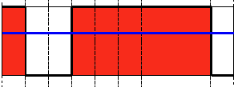
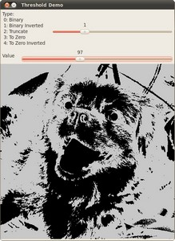
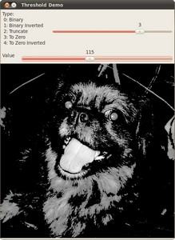

Basic Thresholding Operations¶
Goal¶
In this tutorial you will learn how to:
- Perform basic thresholding operations using OpenCV function threshold
Cool Theory¶
Note
The explanation below belongs to the book Learning OpenCV by Bradski and Kaehler.
What is Thresholding?¶
The simplest segmentation method
Application example: Separate out regions of an image corresponding to objects which we want to analyze. This separation is based on the variation of intensity between the object pixels and the background pixels.
To differentiate the pixels we are interested in from the rest (which will eventually be rejected), we perform a comparison of each pixel intensity value with respect to a threshold (determined according to the problem to solve).
Once we have separated properly the important pixels, we can set them with a determined value to identify them (i.e. we can assign them a value of
 (black), (white) or any value that suits your needs).
(black), (white) or any value that suits your needs).
Types of Thresholding¶
OpenCV offers the function threshold to perform thresholding operations.
We can effectuate types of Thresholding operations with this function. We will explain them in the following subsections.
To illustrate how these thresholding processes work, let’s consider that we have a source image with pixels with intensity values . The plot below depicts this. The horizontal blue line represents the threshold (fixed).

Threshold Binary¶
This thresholding operation can be expressed as:
So, if the intensity of the pixel is higher than , then the new pixel intensity is set to a
 . Otherwise, the pixels are set to .
. Otherwise, the pixels are set to .
Threshold Binary, Inverted¶
This thresholding operation can be expressed as:
If the intensity of the pixel is higher than , then the new pixel intensity is set to a
. Otherwise, it is set to .
Truncate¶
This thresholding operation can be expressed as:

The maximum intensity value for the pixels is , if is greater, then its value is truncated. See figure below:

Threshold to Zero¶
This operation can be expressed as:
If is lower than , the new pixel value will be set to
.
Threshold to Zero, Inverted¶
This operation can be expressed as:

If is greater than , the new pixel value will be set to
.
Code¶
The tutorial code’s is shown lines below. You can also download it from here
#include "opencv2/imgproc/imgproc.hpp"
#include "opencv2/highgui/highgui.hpp"
#include <stdlib.h>
#include <stdio.h>
using namespace cv;
/// Global variables
int threshold_value = 0;
int threshold_type = 3;;
int const max_value = 255;
int const max_type = 4;
int const max_BINARY_value = 255;
Mat src, src_gray, dst;
char* window_name = "Threshold Demo";
char* trackbar_type = "Type: \n 0: Binary \n 1: Binary Inverted \n 2: Truncate \n 3: To Zero \n 4: To Zero Inverted";
char* trackbar_value = "Value";
/// Function headers
void Threshold_Demo( int, void* );
/**
* @function main
*/
int main( int argc, char** argv )
{
/// Load an image
src = imread( argv[1], 1 );
/// Convert the image to Gray
cvtColor( src, src_gray, CV_BGR2GRAY );
/// Create a window to display results
namedWindow( window_name, CV_WINDOW_AUTOSIZE );
/// Create Trackbar to choose type of Threshold
createTrackbar( trackbar_type,
window_name, &threshold_type,
max_type, Threshold_Demo );
createTrackbar( trackbar_value,
window_name, &threshold_value,
max_value, Threshold_Demo );
/// Call the function to initialize
Threshold_Demo( 0, 0 );
/// Wait until user finishes program
while(true)
{
int c;
c = waitKey( 20 );
if( (char)c == 27 )
{ break; }
}
}
/**
* @function Threshold_Demo
*/
void Threshold_Demo( int, void* )
{
/* 0: Binary
1: Binary Inverted
2: Threshold Truncated
3: Threshold to Zero
4: Threshold to Zero Inverted
*/
threshold( src_gray, dst, threshold_value, max_BINARY_value,threshold_type );
imshow( window_name, dst );
}
Explanation¶
Let’s check the general structure of the program:
Load an image. If it is BGR we convert it to Grayscale. For this, remember that we can use the function cvtColor:
src = imread( argv[1], 1 ); /// Convert the image to Gray cvtColor( src, src_gray, CV_BGR2GRAY );
Create a window to display the result
namedWindow( window_name, CV_WINDOW_AUTOSIZE );
Create trackbars for the user to enter user input:
- Type of thresholding: Binary, To Zero, etc...
- Threshold value
createTrackbar( trackbar_type, window_name, &threshold_type, max_type, Threshold_Demo ); createTrackbar( trackbar_value, window_name, &threshold_value, max_value, Threshold_Demo );
Wait until the user enters the threshold value, the type of thresholding (or until the program exits)
Whenever the user changes the value of any of the Trackbars, the function Threshold_Demo is called:
/** * @function Threshold_Demo */ void Threshold_Demo( int, void* ) { /* 0: Binary 1: Binary Inverted 2: Threshold Truncated 3: Threshold to Zero 4: Threshold to Zero Inverted */ threshold( src_gray, dst, threshold_value, max_BINARY_value,threshold_type ); imshow( window_name, dst ); }
As you can see, the function threshold is invoked. We give parameters:
- src_gray: Our input image
- dst: Destination (output) image
- threshold_value: The value with respect to which the thresholding operation is made
- max_BINARY_value: The value used with the Binary thresholding operations (to set the chosen pixels)
- threshold_type: One of the thresholding operations. They are listed in the comment section of the function above.
Results¶
After compiling this program, run it giving a path to an image as argument. For instance, for an input image as:

First, we try to threshold our image with a binary threhold inverted. We expect that the pixels brighter than the will turn dark, which is what actually happens, as we can see in the snapshot below (notice from the original image, that the doggie’s tongue and eyes are particularly bright in comparison with the image, this is reflected in the output image).
Now we try with the threshold to zero. With this, we expect that the darkest pixels (below the threshold) will become completely black, whereas the pixels with value greater than the threshold will keep its original value. This is verified by the following snapshot of the output image:

Help and Feedback
You did not find what you were looking for?- Ask a question on the Q&A forum.
- If you think something is missing or wrong in the documentation, please file a bug report.

Table Of Contents
Previous topic
Next topic
Making your own linear filters!